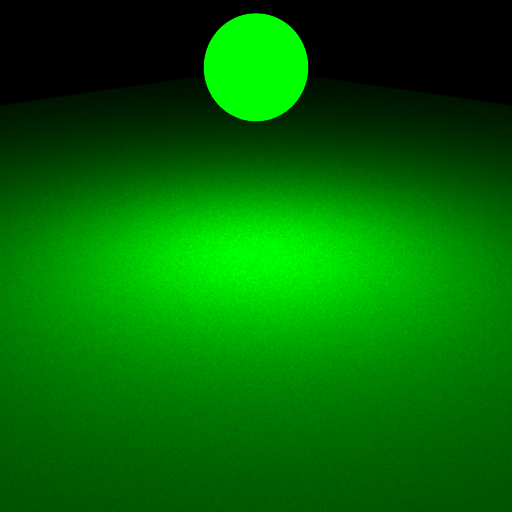
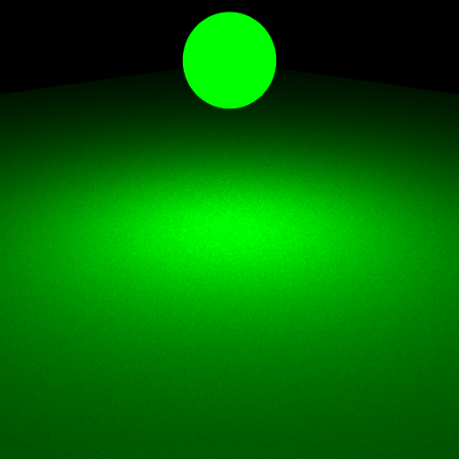
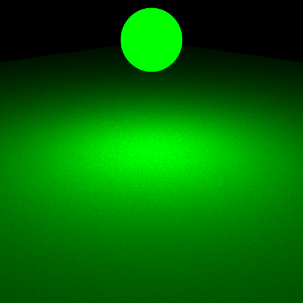

**Homework 3 - Monte Carlo Ray Tracing**
Student Name: Zehang Qiu
Legi Number: 22-739-809
(Note: please read the [supplementary](#supplementary) section first before working on this report.)
# Part 1: Light Sampling
## Integrator Implementation
**Time spent on this task:**
~1 hour
**Describe your implementation of `direct_ems`.**
"direct_ems" is implemented based on "direct.cpp." The first notable difference is the use of a random
emitter instead of all emitters. When I initially worked on Part 1, I found that simply using "getRandomEmitter"
resulted in point light results appearing too dim. While working on Part 3, I reviewed my code and realized that
after using "getRandomEmitter," I could multiply the result by the number of lights in the scene to restore the
correct color.
The second difference is the need to add a check for whether the ray hits a light source. This is achieved by
checking if the intersection is with an "isEmitter()." This component forms the "Le" term in the final equation
for "L."
Apart from these changes, the rest of the code remains largely unchanged.
## Shape Area Light
**Time spent on this task:**
~3 hour
**Describe your implementation of `AreaEmitter::eval(...)`.**
At first, I thought "n" was the normal of the intersection point, but this resulted in the entire scene
appearing black. When I found "emitter.h," I realized that "n" is actually the normal of the emitter point.
"wi" is the vector from the intersection point to the emitter point, and "n" is the normal of the emitter
point. Only when the dot product of "n" and "wi" is less than 0, it means that the light source is
illuminating the corresponding front face.
**Describe your implementation of `AreaEmitter::pdf(...)` and `AreaEmitter::sample(...)`.**
The implementation of the "sample" function is very similar to the "sample" function of the "pointlight."
The only difference is that it uses a "ShapeQueryRecord sRec" to construct some of its attribute values.
The constructor for "ShapeQueryRecord" is obtained from "shape.h." The implementation of the PDF is learned
from the pbrt book, with the key difference being that it doesn't multiply by the area in the end.
## Validation
**Comparison: sphere/sphere_pointlights_ems**
**Comparison: sphere/sphere_ems**
**Comparison: sphere/sphere_mesh_ems**
**Comparison: sphere/sphere2_ems**
**Comparison: sphere/sphere2_mesh_ems**

**Comparison: odyssey_ems**
**Comparison: veach_ems**
# Part 2: BRDF Sampling
## Integrator Implementation
**Time spent on this task:**
~1 hour
**Describe your implementation of `direct_mats`.**
"direct_mats" is implemented based on "direct_ems.cpp."
The primary difference is that it heavily relies on content from "microfacet.cpp."
This class inherits from the "bsdf" class, where functions like "eval," "sample," and "pdf"
require a "BSDFQueryRecord bRec" parameter. Therefore, unlike "direct_ems.cpp," "direct_mats"
uses "BSDFQueryRecord" for construction rather than "EmitterQueryRecord." The "BSDFQueryRecord"
is constructed with "wi," which is the direction vector pointing from the intersection to the
camera, i.e., -ray.d. Once "bRec" is constructed, the desired BSDF value can be obtained through
the "sample" method.
After that, the process is similar to what was done previously, creating a shadow ray from the
intersection. The difference lies in the fact that "bRec" doesn't have its own "wi" construction,
and it's not known whether there is a light source in the direction of "wo." Therefore, "mint" is
set to epsilon, and "maxt" is set to infinity. When the intersection is a light source, meaning it
is illuminated in the direction of "wo," the light's color is multiplied by the previously obtained
BSDF value and added to the point's color.
## Microfacet BRDF
**Time spent on this task:**
~3 hour
**Describe your implementation of `Microfacet::eval(...)`.**
The construction of this function is essentially a step-by-step calculation following the requirements
outlined in the guidance.
**Describe your implementation of `Microfacet::sample(...)`.**
The implementation of the PDF function is basically calculated step by step according to the guidance.
During testing after the implementation, I found that there were cases where the PDF became negative.
I addressed this issue by incorporating the corresponding check, as suggested by the reference in
"diffuse.cpp," to prevent negative PDF calculations.
The construction of the "sample" function is mainly based on assigning the corresponding attributes as
demonstrated in "diffuse.cpp." In fact, I initially implemented the part based on the diffuse component
of "diffuse.cpp." Through issue #51, I learned that some rescaling was necessary, so I performed the
necessary operations. For the specular part, I followed the first two steps of the recipe provided in
the exercise slide.
## Validation
**Comparison: sphere/sphere_mats**
**Comparison: sphere/sphere2_mats**
**Comparison: odyssey_mats**
**Comparison: veach_mats**
# Part 3: Multiple Importance Sampling
## Integrator Implementation
**Time spent on this task:**
~1 hour
**Describe your implementation of `direct_mis`.**
Consistent with what is described in issue #50, since my implementation of Ems part is not multiplied
with area, so I just also used a combination of "ems" and "mat" to
implement the "direct_mis.cpp" file. The images I obtained closely resemble the reference images;
however, I did not pass some of the tests in "test-mesh.xml." I am currently working on resolving this issue.
Update: Thanks to the guidance from issue #50, I have changed the order of "wo" and "wi" in the "BSDFQueryRecord"
under the "ems" section, and I have obtained the correct results.
## Validation
**Comparison: odyssey_mis**
**Comparison: veach_mis**
# Part 4: Four-way Comparison
**Odyssey**
**Veach**
# Feedback
**Use this section to provide feedback about this assignment (each task, the handout, Nori, etc.). We appreciate your opinions to help improve future homeworks and projects.**
The timeline for the assignment is a bit tight. It would be better if could extend the completion time a bit.
# Supplementary
* For each task, please note down the time you spent working through it and use at least a few sentences to describe your implementation. If applicable, also report the problems you encounter (e.g. whether or how it's solved, what is the difficult part).
* Please let us know to what extent your code is working (e.g. you only managed to work through part of this assignment, or your solution doesn't operate as expected in some corner cases). We encourage you to share your thinking process, and points will be granted based on your description even if the code is not 100% functioning.
* Nori generates both EXR and PNG format output. Please use PNG for image comparison in the report.
* This report template uses [Markdeep](https://casual-effects.com/markdeep/), which supports Markdown syntax in HTML file. For example usage, please refer to the [official demo document](https://casual-effects.com/markdeep/features.md.html).
* LaTeX is also supported for typing mathematical formulas:
$$
L_o(\mathbf{x}, \omega_o) = \int_{\Omega} L_i(\mathbf{x},\omega_i)\, f(\mathbf{x}, \omega_i, \omega_o)\, |\cos\theta_i|\, \mathrm{d}\omega_i
$$


 
